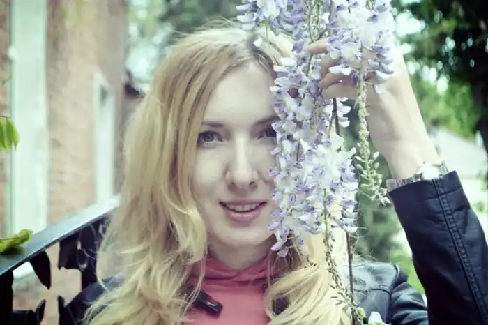
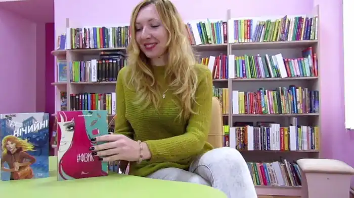

Письменниця. Народилася 1 квітня 1982 року. Мешкає в Полтаві. За фахом – учителька історії і права. Захоплюється психологією, українською культурою та анімаційним світом Хаяо Міядзакі.
Письменницьку діяльність почала із замовлень однокласників на твори із зарубіжної та української літератури. В інституті й по його завершенні писала для жіночих глянцевих журналів.
Від 2010 року почала співпрацю з видавництвом дитячої періодики "Мамине сонечко". Відтак друкувалася в журналах "Барвінок", "Однокласник", "Велика дитяча газета", "Пригоди", "Дніпро"; збірках "Героям слава!", "Незалежність України". Авторка книжок для підлітків "Нічийні" (2017), "#Фізик" (2021), "На північ від кордону" (2021). Твір "Дорогою до казки" у 2011 році був відзначений на конкурсі видавництва "Грані-Т" 2011 рік. Рукопис книжки "На північ від кордону" переміг на конкурсі "Молода коронація слова" (2019) в номінації "Романи", а також на конкурсі від видавництва "Наш Формат" у 2020 році. Проводить літературні читання в Полтавських бібліотеках, розповідає читачам про свої твори на воєнну тематику – про війну в Україні і 5-денну грузинсько-російську війну, долю та важкий життєвий шлях дітей з інтернатів.